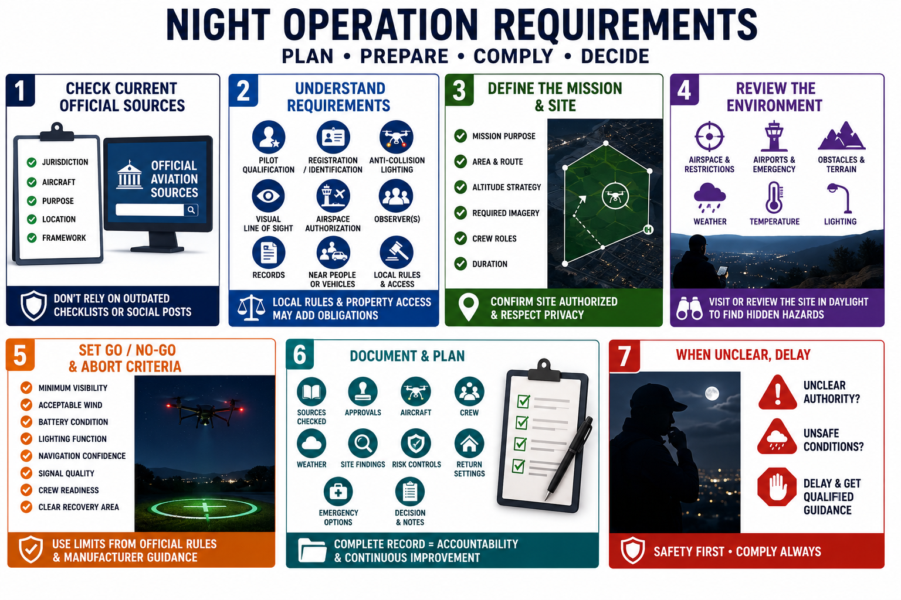

Rules, Authorization, and Planning
Connecting to LMS... Progress: in progress

Narration
Night-operation requirements vary by jurisdiction, aircraft, purpose, location, and operating framework. Check current official aviation sources before flight. Do not rely on an old checklist, a social post, or software geofencing as a complete legal determination.
Requirements may address pilot qualification, aircraft registration or identification, anti-collision lighting, visual line of sight, airspace authorization, observers, records, and operations near people or vehicles. Local rules and property access may add separate obligations.
Define the mission purpose, area, route, altitude strategy, required imagery, crew roles, and duration. Confirm the site is authorized and that collection will not extend into unnecessary private areas or sensitive locations.
Review airspace, temporary restrictions, airports, emergency activity, obstacles, terrain, weather, temperature, lighting, and nearby operations. Visit or review the site in daylight when appropriate so hidden wires, branches, structures, and landing hazards are known before darkness.
Set go or no-go and abort criteria. These may include minimum visibility, acceptable wind, battery condition, lighting function, navigation confidence, signal quality, crew readiness, and a clear recovery area. Use limits appropriate to official requirements and manufacturer guidance.
Document the sources checked, approvals, aircraft, crew, weather, site findings, risk controls, return settings, emergency options, and decision. When authority or conditions are unclear, delay the flight and obtain qualified guidance.